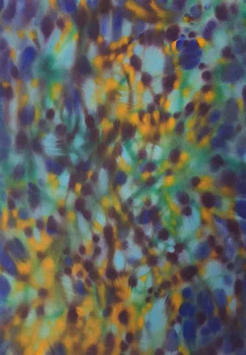

 Abiogenèse n° 5 TitreAbiogenèse n° 5 Année2024 Dimensions79 × 55 cm TechniqueAquarellePrixPrix sur demande L’œuvre seule Fichier image tiré du PDF de documentation des œuvres (version web, grand côté 707 px) ; fichier original en haute résolution à fournir. Œuvre précédenteAbiogenèse n° 4Œuvre suivanteAbiogenèse n° 6